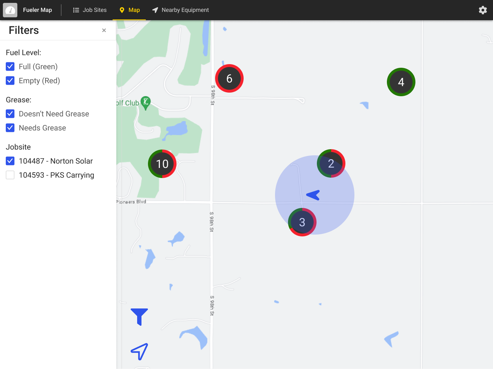
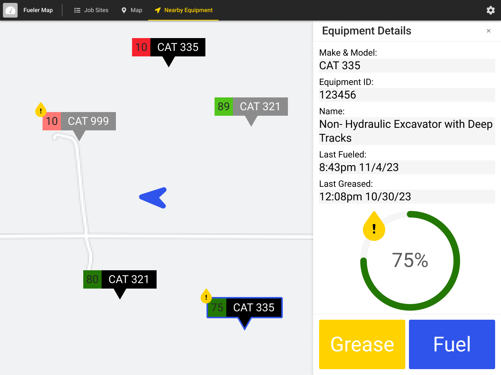

Ultimately, a design is tailor-made for its users. That's obvious right? In practice however, sometimes the user gets forgotten during certain stages the design process -- but not purposefully! An interface is usually first concieved with conventional practices in the layouts, buttons, or whatnot because those are universal. (At least, whenever I start the wireframe, the one size fits all solution is very quick to use.)
So oftentimes, the specialized needs of users aren't captured as well in the first few passes of the design in favor of getting the broader idea across. Not until the users themselves are consulted of course! I wanted to walk through a personal example of how user tests moved my draft from basic into a version truly for my niche of users. So without further ado, here's a screen from the first pass of an app for fuelers in construction site.
For context, a team and I were tasked with solving a problem for an unnamed construction company: their fuelers had to manually visit every equipment on a job site to check if it needed fuel. This was time-consuming because they had no way of knowing if a detour to check a stray bulldozer was necessary. So we decided to create an application that showed all of a job site's equipment on a map with their fuel levels, allowing fuelers to scout ahead and efficiently plan their routes. I was in charge of the front-end, but my only point-of-contact was an overseer two levels above my actual users.
So I had an impression of the workflow of the fuelers and some key assumptions... but nothing beats personally experiencing it. We eventually had the opportunity to actually visit a construction site and ride with some fuelers to understand the details. And oh boy, were many of our assumptions about the design proven wrong. Here's the interface post-visit to the construction site.
The biggest detail we noticed was that the fuelers basically have two modes: driving and fueling. So we actually split the map into two screens: an explorable bigger map (already shown) and a focused zoom at the user's location (given below).
Many of the visual changes happened to take advantage of familiarity. The "pins" that represented pieces of equipment were adapted from apps with a similar solution to us after the fuelers commented on features they liked about them. (And preemptively, these existing apps weren't already being used because they only worked for one brand each like John Deere.) I had also changed some icons to closer match popular map applications like Google/Apple maps because the fuelers relied heavily on navigation.
Additionally, a fueler is often working with gloves in the sun... handling oil in an active construction site. Our interface will be exposed to dirt and grime, the glare from the sun, and unwieldly fingers due to the gloves. So the goal was to limit interaction as much as possible while making it very easy to tap buttons. This is why text is notably large -- which also helps solve the sunglare issue!
And these are just the main highlights of the changes we made after interacting with the fuelers. Despite extensive pondering and questions to an expert, the enlightenment of user feedback truly is eye-opening! So while most designers will gripe and groan about starting user tests, it's an indispensable step in the process. The core of this all is a very simple ideal: know your user.